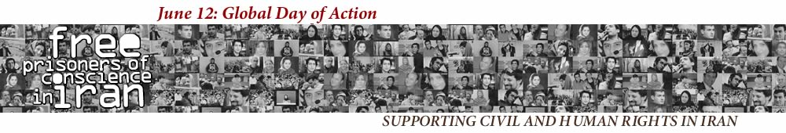

|
|
|
Browsing
Contact Us |
Campaigners |
Face to Face |
Tribune |
Interview |
News |
On the Web |
One Million |
Report
Farsi | Français | German | Italian | Spanish | العربية Also in this section
|
 The Iranian Women’s Quest for Equality: History, Strategies, & DemandsTuesday 8 June 2010 View online : June 12: Global Day of Action History of Iranian Women’s Movement The women’s rights movement in Iran started over 100 years ago. The first voices for women’s rights in Iran were heard in 1900’s, during the constitutional revolution, when women engaged in underground political participation during the revolution in an effort to advocate women’s rights to share the social space. At first, they had basic demands, such as right to education, because they believed that through education the conditions would improve for women. Soon the formation of NGOs (such as the Association for Freedom and the Women’s Secret Union) followed and the women actually became strong enough to establish the first primary schools for girls in 1907. After these primary steps, there was a big wave of publications and periodicals written by women for women. Many of these pieces expressed the dissatisfaction women felt regarding their social, cultural, and political limitations, leading them to call for change. Since then, the Iranian Women’s Rights Movement has experienced many ups and downs. Following Reza Shah coming to power in 1926, two years later, in 1928 Majlis ratified the new dress code for men, particularly for all public servants. In 1931, for the first time, Majlis approved a new civil code that gave women the right to file for divorce under certain conditions, despite the fact that family law remained within the construct of Sharia law, and the marriage age remained set at 15 for girls and 18 for boys. In 1936, unveiling became compulsory. At the time of Reza Shah’s fall, and the rise of democratic movement, independent women-based organizations were formed. More women-based organizations were formed during the 1940’s and early 50’s to advance the position of women in society, also to strongly criticize polygamy. In 1962, women were given the right to vote and to be elected. In 1968, the Family Protection Act was ratified, and as a result divorce cases was referred to family courts, limitations were placed on polygamy, and the written consent of the first wife became a requirement (a piece of law which is currently being challenged by Ahmadinejad’s government, which intend to reverse this law). Also, the legal age for marriage for girls was raised to 18 years. In 1975, women gained the rights for guardianship for their children after their husbands’ deaths. During the 1970’s the discourse of the role and position of women at home and in society moved from the margin to the center of the agenda, with many religious scholars defining and redefining the position of women within the Islamic framework. By 1978, 33% of university students were female, and 2 million women were working in the formal sector of economy. Women were present in many aspects of the movement during the rise of people’s movement in 1978 that led to 1979 revolution in Iran. Shortly after the establishment of Islamic Republic in January of 1979, the wave of restrictions imposed on women started; the first move was the enforcement of compulsory Hijab; later in March 1979 women were barred from serving as judges, and in April the Family Protection Law was abolished. Women organized a mass demonstration to oppose these discriminatory laws on March 8th; it did not receive much support and solidarity from the forces in the democratic movement in Iran. During the short lived “Spring of Freedom” tens of women magazines were published and many women organizations established. The 1979 revolution, which led to many civil, legal, and cultural changes, despite the many cases which worsen the conditions for women, it led to higher presence of women in the public sphere because the new Islamic society was deemed safe enough for women from conservative and religious families to leave home, get educated and join the workforce. This was huge as today over 60% of university students are women. Meanwhile, the new legislations after the revolution, except for the right for women to vote, were abolished, moving backwards the small accomplishments women had achieved in the areas of legal age, divorce, temporary marriage laws and custody. The new wave of the Iranian Women’s Movement started about ten years ago in the reform era and during the presidency of Mohammad Khatami. Various groups were formed and project plans were drawn, including the latest and globally acknowledged effort, the One Million Signatures Campaign. During the 1979 revolution, women were physically present and participated actively in the revolution and demonstration, but in the 2009 demonstrations, they took part in a mixed gender demonstration (in contrast to 1979 during which women and men were separated). This time, women were not only physically present but also were out there with gender analysis and specific demands, specifically 1) Demanding candidates to take a stand on women’s issues, 2)Revising certain articles of constitution that lead to or promote gender inequality, and 3) Asking that Iran joins the Coalition of Elimination of Discrimination Against Women (CEDAW). Methods Used by Women Activists in Iran Horizontal working: In different women’s groups and organizations, activists frequently put the hierarchical ways, behaviors, thinking, and practices to the test. It has been observed that many were practicing what it is being challenged. Exercise of power can be done on the basis of age, experiences, education level, urban and middle class position, and so on. That is why workshops and group discussions are needed in order to discuss these issues constantly. Decentralization of power: Overlapping of experiences and decentralization of power always come together. By advocating for shared responsibilities activists attempt to overlap resources, knowledge and experiences. There are two intentions: 1) We help each other to grow and gain new skills and 2) We will reduce our weakness, and reliance on a few individuals that may not be always available in light of immense state pressure and unsecured society. Consciousness raising: Face to face meetings with women and men from different groups, listening to the general public, while providing information, promoting public interaction, were all methods that not only challenge the legal system, but also help confront people and their cultural patriarchal values on a daily basis. These three characteristics; challenging the hierarchical way of working, meeting people face to face, and consciousness raising, forces the movement not only to demand equal treatment from the law or government, but also to challenge personal behaviors and try to practice equal treatment in the everyday encounters. In addition, by documentation, writing, interviewing, women activities are highlighted. Discriminatory Laws Targeted by Women’s Rights Activists I. Family law: Divorce, Marriage, Inheritance, Child Custody, Number of the partners. Divorce: A man can divorce his wife whenever he pleases. If it can be stipulated that the husband has married another wife or absents him self during a certain period, or discontinues the payment of cost of maintenance, or attempts the life of his wife or treats her so harshly that their life together becomes unbearable, or he is certified as an drug addict, then the wife has the power, which she can also transfer to a third party by power of attorney to obtain a divorce herself after establishing in the court the fact that one of the foregoing alternatives has occurred and after the issue of a final judgment to that effect. Marriage: With the court’s permission, a father can marry his daughter off, even before the age of 13, to a 70 year old man. The cost of maintenance (including dwelling, clothing, food, furniture) of the wife is at the charge of the husband in permanent marriages. This law also serves as a guide to alimony settlement after divorce. If the wife refuses to fulfill her duties as a wife without legitimate excuse, she will not be entitled to the cost of maintenance. Inheritance: After the death of the father and mother, sons receive two times as much in inheritance as daughters. If the father and mother of the deceased are both alive and there are no spouses or children, the mother takes one- third and the father two-thirds of the inheritance. If siblings are the only heirs, the share of a male will be twice that of a female. The husband takes inheritance from the whole of the effects of the wife; but the wife takes only from the following effects: any kind of movable property and only from the price of the building and trees but not the ownership of such properties or land even if the spouse has indicated otherwise in his will. Child Custody/Guardianship: A minor child is under the guardianship of his or her father or paternal grandfather or in their absence the court (never the natural mother). This means the mother of a child will neither be able to sign on behalf of a child if medical care/surgery is needed, nor can the mother ever be the legal financial representative of her child – even if the father of the child has requested in his will. A mother cannot open any account in her child’s name, besides a loan account, or buy a house for her child without her husband’s signature. Number of partners: Men are allowed to have multiple wives; it means a man can have 4 aghdi (permanently married) wives and infinite sighehi (temporarily married) wives. This law is said to follow Sharia’s guidelines. II. Criminal law: Age of Criminal Responsibility, Compulsory Dress Code (hejab), Diyeh (Blood Money), Laws that support honor killings Age of criminal responsibility: The age of criminal responsibility for girls is 9 lunar years (8 years and nine months) and for boys is 15 lunar years (14 years and 6 months). Thus if a 9-year-old girl commits a crime, she will be treated as an adult and all the penal laws (even execution) will be applicable to her. Compulsory Dress Code (hejab): All women, regardless of the religion practiced, are required to follow a strict Islamic dress code that requires covering all strands of hair (in some public places with black chador), loose clothing that hides their shape, and only exposing the roundness of their face, their hands below the wrist, and their feet below the ankle. Diyeh/Blood Money: In Iranian law, a woman’s life is considered to be worth half that of a man. For example, if a brother and sister are hit by a car on the street, and both have their legs broken, the compensation that the brother receives is double that of his sister’s. This law was changed in 2008 in regards to compensation from insurance companies, which now requires insurance companies to pay evenly regardless of gender. Laws that support honor killings: The law that gives a man permission to kill his wife without any punishment whenever he sees her in bed with another man. This law has allowed men (such as a father) to kill women (such as the daughter) based solely on suspicion of “indecent” behavior. Citizenship/Nationality: The following persons are considered to be Iranian subjects: those born Iran or outside of Iran whose fathers are Iranian. The citizenship of a woman does not transfer to her child even if the child is born inside of Iran but to a non-Iranian father (i.e. to an Afghani father). Father’s consent for marriage: At any age and any social or educational standing, women are required to provide written consent from their father in order to get married. Right to Travel: At any age, and at any social or educational standing, women are required to provide written consent from their husbands in order to cross Iran’s borders. The husband can revoke this right at will and without notice to his wife (a notice submitted to the immigration office is enough). Right to Employment/Education: A father or a husband, at will, can ask that the employment of his wife or daughter be terminated or enrollment in school be cancelled. A recent law requires the written consent of the father or the husband, if the daughter or the wife wants to study in an educational institution that is outside of her home town. Bearing Witness: The testimonies of two women are equal to of one man. There are some crimes women can not testify to, these include: sodomy, homosexuality, and prostitution. IV. Other Discriminatory Laws: The condition “Rajal-e siyaasi” – which has been interpreted as “man of politics” to date – appears in the conditions for becoming President. This means that a woman cannot become the country’s president. Various Focus Adopted by Iranian Women’s Rights Groups The governmental organizations focus on educating the public on the current law with out criticism. They do not address the extended public violence that women face everyday on the streets. Most of these groups are groups who will follow the law as is and will not challenge it to change. Links to Related Websites /english/ http://www.irangenderequality.com/ http://movementwatch.com/ http://feministschool.org/english/ http://www.irwomen.info/spip.php?rubrique19 Slogan/Demands: |